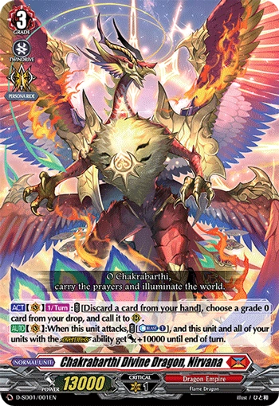
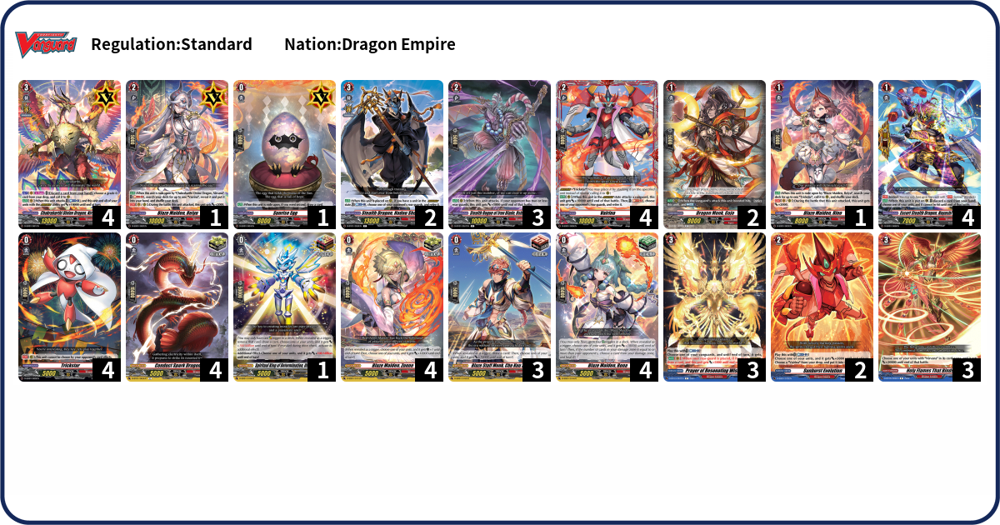

What is Chakrabarthi Divine Dragon, Nirvana?

"The dragon that hatched from the dragon egg. Nirvana, hatched from Sunrise Egg that was worshipped at the Red Dawn Manor, has been expected to be born since ancient times. The great powers of the Sun dwelling within the divine dragon, it is crowned with the same name as the Era, “Chakrabarthi Divine Dragon”."
Nirvana with Common units

Deck Code: 9B9W
D-SD01 introduces the "overDress" mechanic exclusive to Nirvana, allowing the little "Trickstar" to get even stronger. Unfortunately, all of Vairina's other forms are locked behind higher rarities so building a cheap version of this deck is not possible. Commons included in this deck either benefit on having overDress cards (Prayer of Resonating Wishes or Hadou Shugen) or are cards that synergize with Nirvana (Holy Flames that Binds). Other cards are just units that help you out if you are out of options. Make use of "overDress" to control the battlefield.